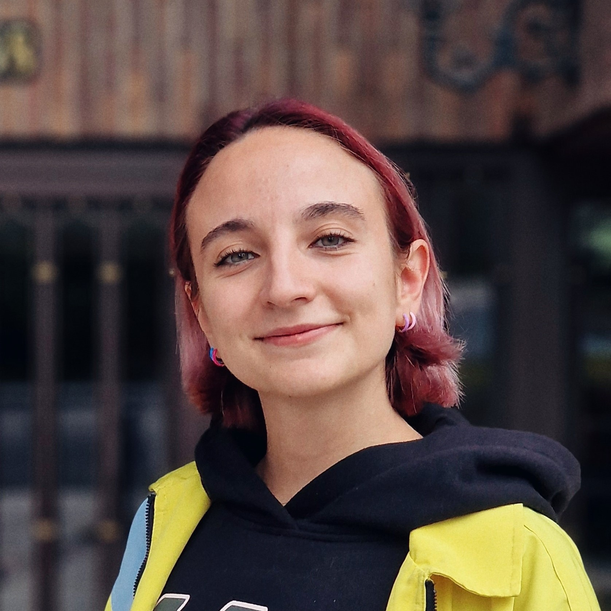
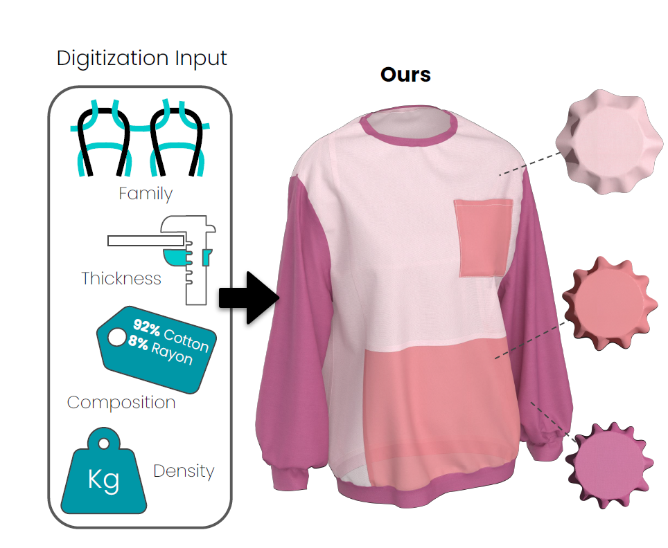
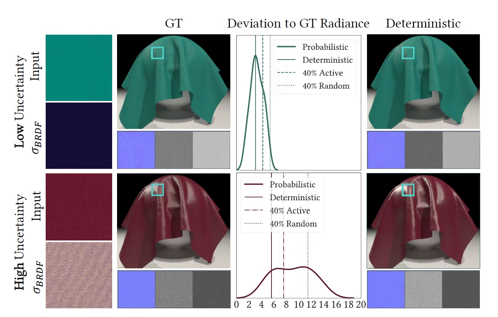

AI and Computer Vision Reseracher, PhD candidate
Universidad Rey Juan Carlos (URJC), Madrid

I am an Artificial Intelligence and Computer Vision researcher, currently pursuing my Ph.D. in the
field of material digitalization and image intrinsic decomposition using neural networks. My
research focuses on leveraging advanced techniques to analyze and process materials in a digital
format.
Additionally, I also have experience in data analysis and data engineering, enabling me to extract
valuable insights and drive impactful outcomes from complex datasets.
|  |
Practical Methods to Estimate Fabric Mechanics from Metadata Henar Domínguez-Elvira, Alicia Nicas, Gabriel Cirio, Alejandro Rodríguez and Elena Garcés EUROGRAPHICS, 2024 pdf project |
|  |
UMat: Uncertainty-Aware Single Image High Resolution Material Capture Carlos Rodríguez-Pardo, Henar Domínguez-Elvira, David Pascual-Hernandez, Elena Garcés, IEEE/CVF Conference on Computer Vision and Pattern Recognition (CVPR), 2024 project |